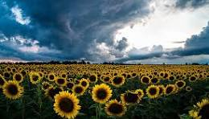
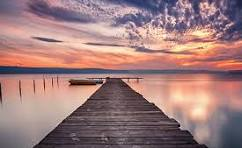
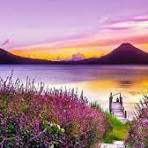
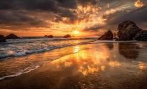

RUTAS DE SENDERISMO
Descubre los senderos más emblemáticos de Bilbao y sus alrededores. Rutas seleccionadas detalladamente para todos los niveles.

ModeradaMonte Pagasarri y Ganekogorta
La ascensión clásica por excelencia para cualquier bilbaíno. Desde la cima del Ganekogorta disfrutarás de unas vistas aéreas incomparables de todo Bilbao, el Gran Bilbao y la costa.

FácilFlysch de Barrika a Plentzia
Espectacular sendero costero al borde de acantilados donde contemplarás el impresionante Flysch del Cantábrico. Termina en la hermosa bahía y puerto de Plentzia.
 Fácil / Med.
Fácil / Med.
Bosque de Oma y Santimamiñe
Una mágica fusión de arte y naturaleza en la Reserva de la Biosfera de Urdaibai. Admira la obra del artista Agustín Ibarrola plasmada en los pinos y visita el entorno de las cuevas prehistóricas.

AltaUrkiola y Cresta del Amboto
Aventura pura de montaña cruzando el Parque Natural de Urkiola hasta el mítico Amboto, morada de la diosa Mari. Una cresta aérea exigente no apta para personas con vértigo.

FácilSan Juan de Gaztelugatxe
La emblemática ermita medieval asentada sobre un peñón rodeado por el mar Cantábrico. El camino empedrado de 241 escalones brinda vistas espectaculares y una brisa marina única.
 Fácil / Med.
Fácil / Med.
Cañón de Delika y Salto del Nervión
Precioso recorrido que remonta el río Delika entre hayedos y desfiladeros de roca caliza hasta situarse frente al Salto del Nervión, la cascada más alta de la península ibérica.